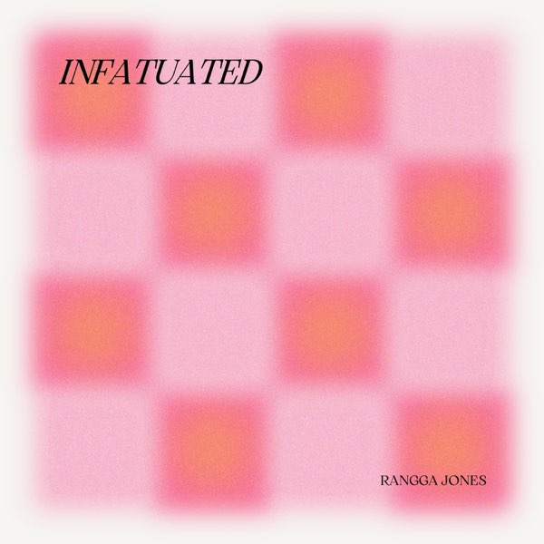

TOP 1
Strawberry Champagne

Artist: Dept
Album: Your Eyes
Year Released: 2024
“Strawberry Champagne” is a song by Dept, released in 2024.
The track is available for streaming on platforms like Spotify.
eThe song’s lyrics express feelings of lifelessness without someone, comparing bittersweet uncertainties to the taste of red wine.
TOP 2
Tibok

Artist: Earl Agustin
Single: Tibok
Year Released: 2023
“Tibok” is a song by Filipino artist Earl Agustin, released as a single on June 16, 2023.
The track showcases Agustin heartfelt lyrics and melodic composition, resonating with many listeners.
It debuted at #196 with 115.1K streams and recently reached a new peak of #56, achieving a daily high of 208.5K streams.
TOP 3
Miss Miss

Artist: Rob Daniel
Single: Miss Miss
Year Released: 2002
“Miss Miss” is a song by Filipino artist Rob Deniel. Released on December 8, 2023, it falls under the pop genre.
a heartfelt song by Filipino artist Rob Deniel that delves into the emotions of longing and yearning for a loved one who is absent.
The song has resonated with many listeners, leading to its popularity on platforms like TikTok.
TOP 4
Waltz of Four Left Feet

Artist: Shirebound & Busking
Album: For Pincess, By Thieves
Year Released: 2019
“Waltz of Four Left Feet” is a song by Filipino artist Shirebound & Busking that delves into the complexities of unspoken affection and the fear of vulnerability.
The title metaphorically represents the awkward dance of two individuals hesitant to express their emotions, akin to dancing with “four left feet.” This imagery emphasizes the clumsiness and uncertainty inherent in unspoken love.
Listeners have resonated deeply with the song’s emotive narrative, often sharing personal reflections on its impact.
TOP 5
Sa Bawat Sandali

Artist: Amiel Sol
Single: Sa Bawat Sandali
Year Released: 2024
“Sa Bawat Sandali,” released on December 6, 2024, is a heartfelt ballad by Filipino singer Amiel Sol, produced by Miguel Haleco under Ivory Music.
The song delves into themes of love and solace, portraying a deep yearning for peace amidst life’s chaos.
Upon its release, “Sa Bawat Sandali” debuted at number 58 on the Billboard Philippines Hot 100 and peaked at number 5, also securing the third spot on the Top Philippine Songs chart.
TOP 6
Killer
Artist: HYBS
Album: Making Streak
Year Released: 2022
“Killer” is a track by the Thai indie-pop duo HYBS, released on May 24, 2022.
The song delves into the emotional turmoil of being betrayed by a cold-hearted lover, metaphorically likened to a “killer” who causes deep emotional wounds.
The lyrics convey a sense of vulnerability and heartbreak, reflecting on the pain of trusting someone who ultimately causes harm.
TOP 7
Ipanumpa Ko

Artist: Oh! Caraga
Album: Waay Sukod
Year Released: 2019
“Ipanumpa Ko,” performed by the Filipino country-pop band Oh! Caraga, is a Visayan song that translates to “I Promise” in English.
The track delves into themes of unwavering loyalty and devotion, with the singer pledging eternal commitment to their beloved. The lyrics emphasize a profound promise to remain steadfast and true, regardless of life’s challenges.
The song gained significant recognition, becoming a finalist in the International Songwriting Competition’s World Category in 2020.
TOP 8
More Than Words

Artist: Emi Thasorn
Single: More Than Words (มากกว่าที่รัก)
Year Released: 2025
“More Than Words” (มากกว่าที่รัก) is a song performed by Thai artist Emi Thasorn. It serves as the official soundtrack for the Thai series “Us รักของเรา” (“Us Our Love”).
The song beautifully encapsulates the themes of love and connection portrayed in the series, resonating deeply with its audience.
Emi Thasorn’s dual role as both an actress and singer in “Us รักของเรา” adds depth to her performance, making “More Than Words” a significant addition to the series’ narrative.
TOP 9
Infatuated
Artist: Rangga Jones
Single: Infatuated
Year Released: 2024
Musically, it blends contemporary R&B with soulful melodies, showcasing Jones’ smooth vocals and emotive delivery.
Upon its release, “Infatuated” garnered attention for its relatable lyrics and catchy rhythm, resonating with listeners experiencing similar feelings of passionate longing.
TOP 10
Weirdo
Artist: WIM
Album: NOICE
Year Released: 2024
“Weirdo” is a song by the Belgian singer Wim Soutaer, released in 2024.
The track showcases Soutaer’s distinctive style, blending introspective lyrics with a captivating melody. The song is available on various streaming platforms, including Spotify and Apple Music.